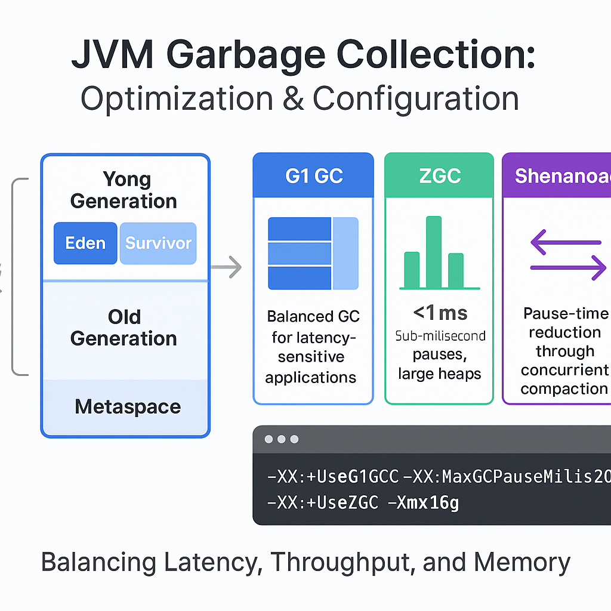

Comprendre la technologie qui fait tourner le monde.
Bienvenue sur Hexplain
Découvrez une documentation technique claire, concise et élégamment présentée pour créer des logiciels de qualité en toute confiance.
BLOG TECH
Derniers aperçus techniques
Analyses approfondies sur des sujets techniques, bonnes pratiques et tendances du secteur.

Java
Garbage s2 Collection (GC) in the JVM – Optimization and Configuration
Reduce GC (Garbage Collection) pauses in Java applications...
Lire l’articleArticles récents

Microservices
Architecture Microservices


NodeJs
Différence entre export default et module.exports = {}
Comprendre package.json dans les projets Node.js / JavaScript
Le fichier package.json est le fichier central d’un projet Node.js ou JavaScript.
Intro Tailwind CSS
Tailwind CSS est un framework CSS utilitaire qui fournit des classes de bas niveau pour construire des interfaces personnalisées sans écrire de CSS personnalisé.
Pourquoi Vite est utilisé lors de la construction d'une application React
Vite est un bundler de projet moderne qui est souvent utilisé pour construire des applications React (et d'autres frameworks modernes comme Vue, Svelte, Astro, etc.).